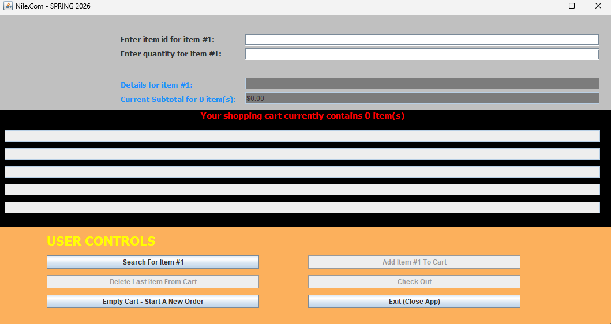
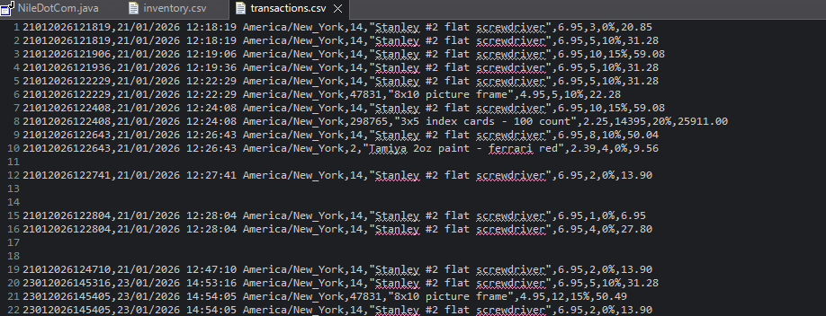

Case Study — Java GUI Development
A desktop ordering application built with Java Swing and Eclipse WindowBuilder - simulating a real e-commerce workflow from item search through transaction logging.


Nile.com (NileDotCom) is a desktop GUI application built in Java that simulates a simple online ordering workflow. Users can search for items, enter quantities, review item details and subtotals, add multiple items to a cart, and finalize an order.
The project emphasizes building a working GUI using Eclipse WindowBuilder while connecting UI actions to backend logic — including calculations, state tracking across workflow steps, and structured file output.
transactions.csv file — practical file I/O.
Find this project and more on GitHub.